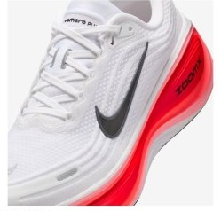
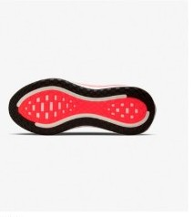

DAILY｜反発系クッション
厚さと弾みを、¥22,000で。
衝撃吸収147SAはデイリー67足で8位、前足部のエネルギーリターン68.8%は5位。クッションと反発が両方そろうデイリーは多くない。性能点4.00はデイリー10位で、コスパ点は4.0。上位版のボメロ プレミアムより¥7,700安く、37g軽い。
クッションと弾みを両方ほしい人。ジョグからロング走まで1足でこなしたい人。
安定性を重視する人。蒸れやすさが気になる人。


衝撃吸収147SAでクッションは4.0点。前足部のエネルギーリターンは68.8%で、デイリーの中では上位である。
かかとの幅は99.2mmと広いが、ヒール剛性は3。安定性は4.0点である。
反発は高いが、実測289gの重さで点が伸びない。
5点満点。計測値を当サイトのルールで点数にしたもの。
クッション4.0、安定性4.0、耐久性4.5、グリップ3.5、スピード3.0、軽さ2.0。通気性は計測で最低水準の数値が出ており、点数には入れていない。
高いほど反発する。
軽いほど短い。
| ボメロ プラス | ボメロ プレミアム | ボメロ 18 | ペガサス プレミアム | |
|---|---|---|---|---|
| 価格 | ¥22,000 | ¥29,700 | ¥16,500 | ¥29,700 |
| 実測重量 | 289g | 326g | 298g | 308g |
| 衝撃吸収（SA） | 147 | 173 | 147 | 155 |
| エネルギーリターン前足部 | 68.8% | 64.4% | 58.9% | 68.3% |
| 摩擦係数 | 0.52 | 0.50 | 0.38 | 0.49 |
| 摩耗深度 | 0.8mm | 0.7mm | 1.1mm | 1.0mm |
| 性能点 | 4.00 | 4.36 | 3.64 | 3.99 |
| コスパ点 | 4 | 3.5 | 3.5 | 2.5 |
ボメロ 18より¥5,500高いが、9g軽く、反発は9.9ポイント高い。摩耗も少ない。ボメロ プレミアムはクッションと安定性で上回るが、¥7,700高く、37g重い。
ドロップは10mm。曲げ剛性19.8Nは67足で6番目に硬い。摩擦係数は0.52で、グリップは3.5。摩耗深度は0.8mmで、推定寿命は約700kmある。
実測289g（US9）は、サイトの掲載値266gより重い。ドロップは10mmあるので、低いドロップの靴から替える人は違いを感じやすい。
ジョグもロング走も1足で済ませたい人の候補になる。週15kmなら約11か月で700kmに届く。
クッションと反発をどちらも上位で備え、価格はプレミアムより大きく安い。蒸れやすさを許せるなら、バランスの良い1足である。
※本記事は海外ラボ（RunRepeat）の計測データとメーカー公表値、当サイトの計算をもとにした分析です。計測はUS9（約27cm）です。1kmあたりの費用は摩耗深度から推定した寿命での概算です。価格は当サイトの掲載値で、変更されている場合があります。